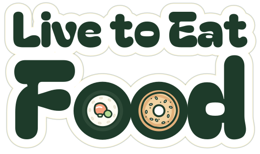
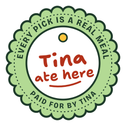
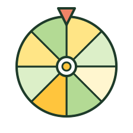
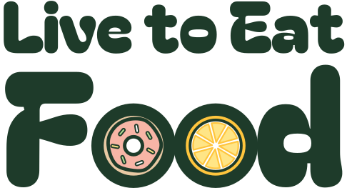

The friend who always knows where to eat.
Live to Eat Food is Tina Vo’s guide to eating in Worcester and Central Mass: ten years of meals she paid for herself, now made searchable, with deals, daily specials, a spin-the-wheel for indecisive nights, events, community photos and a food help page. Every pick traces to a real meal. Paid spots are always labeled and never touch a rating.

LTEF · Sheet 1 of 7 · Brand book overview · Die-cut on white vinyl · Oct 2026
The direction, in plain words
Tina asked for food first, soft colours that taste like daylight, and a brand that feels like her: fun and easy to love, not a directory. So the whole identity is a sheet of stickers you could peel off and put on a laptop, a takeout bag or a hoodie.

Food first
Dishes and ingredients lead every surface. No buildings, no street scenes, no skylines.
Yellow & green
Soft pastels, led by butter, lemon, pistachio and matcha. Pastels fill; deep basil green carries every word.

Fun, not fussy
Chunky type, die-cut stickers and Tina’s own handwriting. Modern and warm, never cute for its own sake.

One system
Every mark works on a phone screen and screen-printed on cotton, in three inks or fewer.
LTEF · Sheet 2 of 7 · Direction
Palette
Six pastels for fields and fills, one deep basil for words. Every swatch below shows the text colour it carries and the contrast it reaches.
LTEF · Sheet 3 of 7 · Palette · full specs in the brand book
Four voices of type
A chunky display face to shout the good stuff, a friendly sans to read, a squared-off grotesque for buttons and facts, and handwriting that belongs to Tina alone.
Spin for it.
Order the crispy rice first, then whatever the special is. Go on a weeknight; the weekend line wraps around the corner.
Open now · $$ · 0.4 mi · Get directions
I’d get this again.
Open for Tina: she’s weighing the bubbly display face against four calmer options (Bricolage ExtraBold, Young Serif, Outfit and Gloock). They’re set side by side in the brand book; nothing changes until she picks.
LTEF · Sheet 4 of 7 · Type
Logo, stamp and stickers
The two o’s in Food are food: a sushi roll and a pizza by default, swappable for pizza and ramen or the classic eggs. The round stamp is the brand’s promise you can see: Tina ate here, and she paid.


LTEF · Sheet 5 of 7 · Marks
See it as a website
The Live to Eat Food site, built straight from this book: the same tokens, stickers, trust labels and type. 52 real places and Tina’s TikToks from the first concept, five neighborhood guides, a filterable map, Restaurant Roulette, daily deals, what’s new and a food help page, plus the paid side kept visibly apart: sponsor slots, the Monthly Crumbs newsletter and its emails, Enhanced listings and a media kit. Deals, events, prizes, sponsors and the hosted visit are samples.
LTEF · Sheet 6 of 7 · Example site · Real places, sample deals


Everything else is in the book.
Strategy, every hex and pairing, type sizes, the sticker rules, voice, photography, the page applications, the don’ts, merch (on hold), and a token block ready for the WordPress theme.
LTEF · Sheet 7 of 7